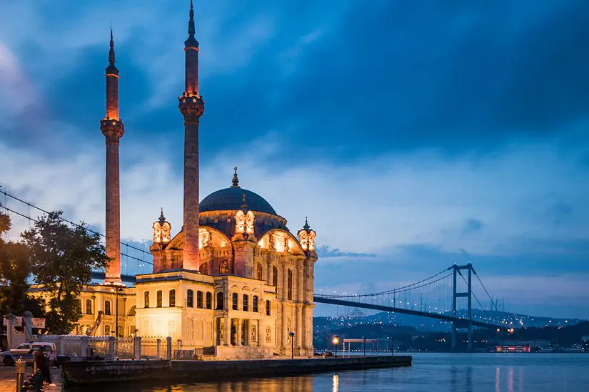
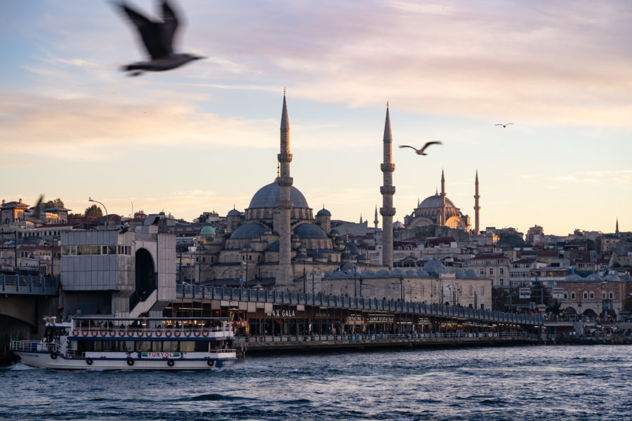
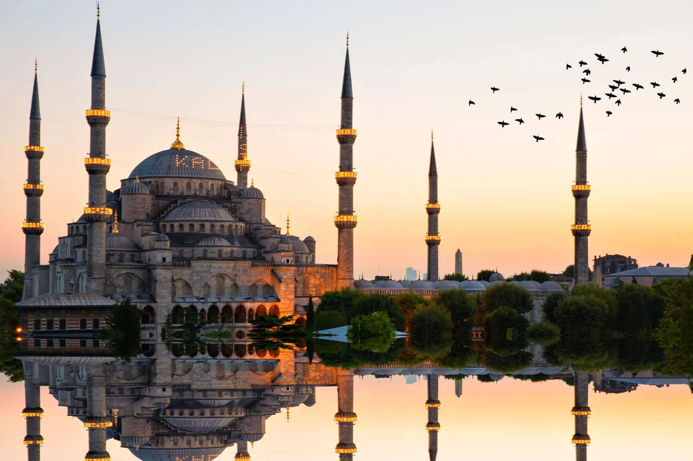
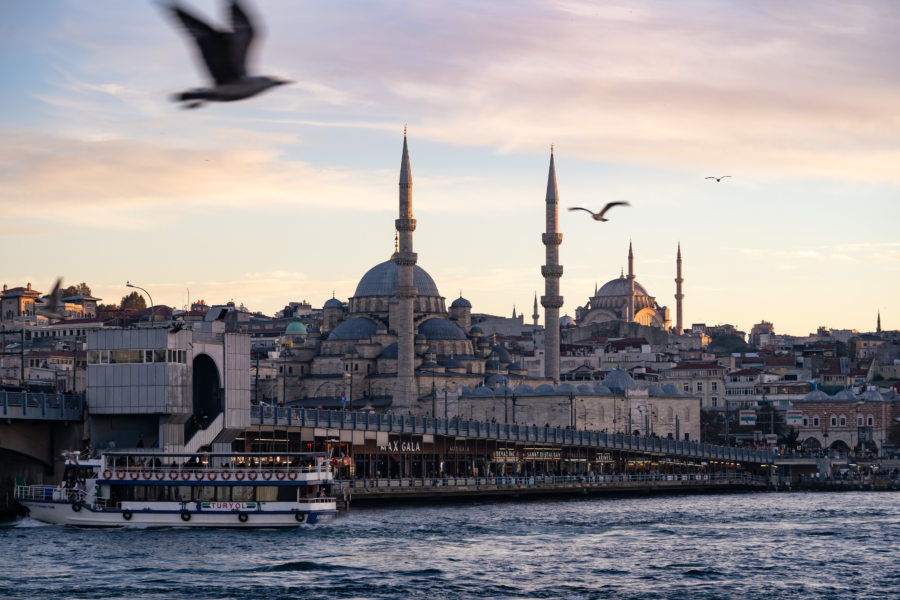
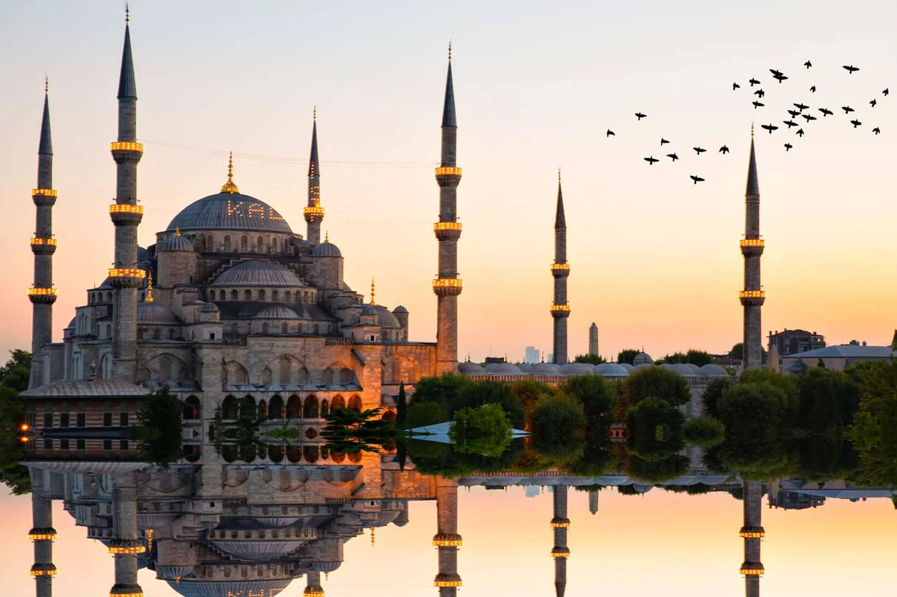
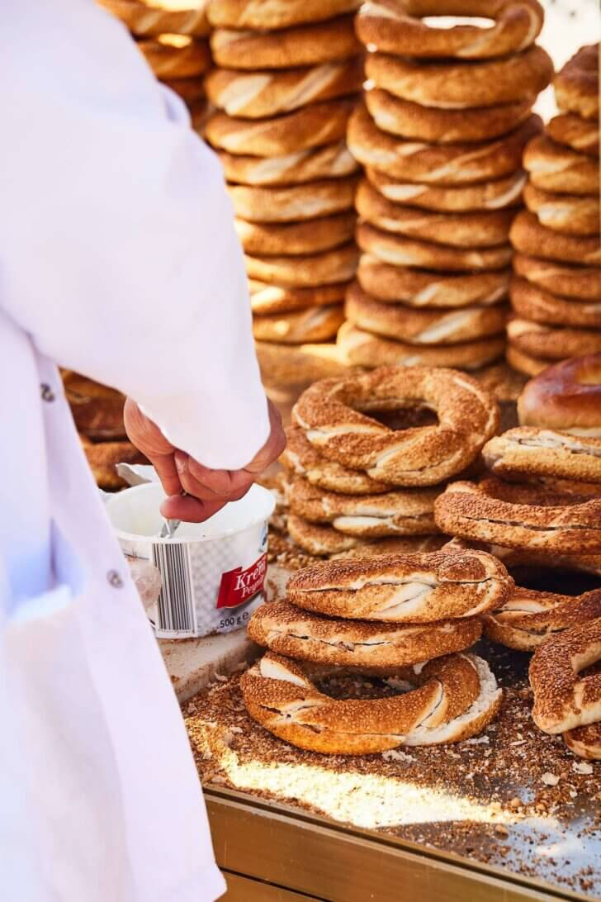
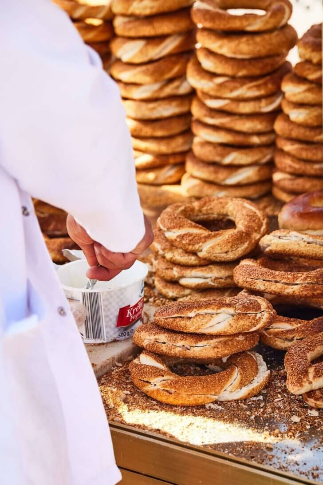

Stad in Turkije
Istanbul of Istanboel (Turks: İstanbul; voorheen Byzantium, Nova Roma en Constantinopel geheten) is de grootste stad van Turkije. Istanbul telt 12,8 miljoen (2009) inwoners en is daarmee de op drie na grootste metropool van de wereld. De gelijknamige provincie Istanbul is onderverdeeld in 32 districten. De stad Istanbul is gelegen aan de zeestraat Bosporus, in het noordwesten van het land. Het strekt zich zowel uit over Europa (Thracië) als over Azië (Anatolië) en is daarmee de enige stad in de wereld die gelegen is op twee continenten. Van het vliegveld naar de stad Vanaf Istanbul International Airport (IST) is het ongeveer 40 minuten rijden naar het populaire district Karakoy. Vanaf Sabia Gökcen International Airport (SAW) doe je er een uur over. Let op: tijden zijn afhankelijk van het verkeer! Taxi De makkelijkste en snelste optie is om een taxi te nemen. Volg op het vliegveld de bordjes naar de officiële taxi standplaats. Officiële taxi’s zijn geel. Vraag de chauffeur om de meter aan te zetten zodra je vertrekt. Ik betaalde voor een ritje naar Karakoy zo’n 400 Turkse Lira (in 2023). Dat was toen ongeveer € 15. Privé Taxi Dit zijn veelal zwarte taxi’s die je online van tevoren kunt boeken of bij zo’n kantoortje op het vliegveld. Ik heb dit niet gedaan omdat de prijzen veel hoger liggen. Je betaalt voor een ritje naar het centrum van Istanboel zo’n € 50. Echter deze taxi’s zien er wel een stuk netter uit dan de normale taxi’s. En je hoeft niet te wachten. Havaist bus Vanaf beide vliegvelden vertrekken bussen van de organisatie Havaist naar populaire plekken in Istanboel. Er zijn verschillende haltes waar je kunt uitstappen. Het schema kun je checken op de website van Havaist. Er is geen Engelse site (in 2023) dus je moet even Google Translate gebruiken. Je kunt online een kaartje kopen of op het vliegveld. De bus is een goedkope optie. Je betaalt zo’n € 4 (in 2023) voor een ritje naar het Taksim plein. Ik heb zelf de bus niet genomen omdat deze niet in de buurt stopte van mijn hotel. Ik moest dan vanaf Taksim twee keer overstappen op de metro en en nog een stuk lopen. Of een taxi nemen. Daar had ik geen zin in. Metro Het metro netwerk van Istanboel is de laatste jaren flink uitgebreid. Vanaf Istanbul International Airport kun je de M11 metrolijn nemen naar Gayreteppe (M2 lijn) en dan doorreizen naar bijvoorbeeld Taksim. In 2023 was Gayreteppe station echter nog niet in werking en moest je eerst naar Kagithane station en dan later weer een paar keer overstappen. Voor mij was dit teveel gedoe. Waar verblijf je? Ik verbleef bij het Halich Hotel in de populaire wijk Karakoy. De locatie is ideaal. In tien minuten loop je naar de Galatatoren. In de buurt vind je een busstation, metro en tram waarmee je naar andere delen van Istanboel kunt reizen. Het Halich Hotel is perfect voor vrouwelijke solo reizigers. Ik heb me nog nooit ergens zo welkom gevoeld. Vooral de dames bij de ontbijtzaal en de receptie waren enorm aardig. Ik kon ze alles vragen. De kamer was perfect maar het mooiste was de ontbijtzaal met uitzicht over de Bosporus.
Klimaat
Istanbul heeft officieel een Middellandse Zeeklimaat, hoewel de invloed van het zeewater hier minder sterk is dan in plaatsen langs de zuidkust van Turkije. Zo kan het voorkomen dat het rond eind april/begin mei erg koel en regenachtig is. Temperaturen kunnen dan zomaar ruim 10 graden onder het gemiddelde liggen. In de maanden januari en december kan sneeuwval voorkomen, waardoor de stad soms vrijwel geheel lam komt te liggen. Vaak verdwijnt de sneeuw bijna net zo snel weer als hij gevallen is. Wie de stad wil bezoeken, kan dat het beste in de periode mei/juni of september/oktober doen. De maanden juli en augustus is het vaak te warm voor een stadsbezoek, hoewel het dan langs de Bosporus zeker 's avonds erg aangenaam kan zijn.
Traditioneel eten in Istanboel
Verplicht proeven: lahmacun (pikante Turkse pizza), köfte (gekruid gehakt in verschillende variaties), mezze (kleine vegetarische voorgerechtjes met Turks brood), de vele soorten kebabs (lamsvlees), verse vis aan de Bosporus, diverse zoete nagerechten (baklava!) en natuurlijk het Turks fruit.
Museums in Istanboel
 



 
